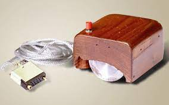

O que é o mouse?

O mouse, como já sabemos, é um equipamento eletrônico desenvolvido para auxiliar uma pequena seta (cursor) para algum lugar da tela.
Na parte superior do mouse mais comuns, é possível notar 2 botões nas extremidades, e entre eles, uma pequena "rodinha" para mover a página para cima e para baixo.
Na parte inferior, observa-se um buraco tampado por um plático transparente e iluminado por uma "luizinha" vermelha, onde se encontra o sensor do mouse, responsável por mandar as cordenadas "X" e "Y" para o computador.
Sendo "X" para representar se o curso está indo para a direita ou para a esqueda e "Y" representando se o curso está indo para cima ou para baixo.
O primeiro mouse feito
O primeiro mouse era bem simples, sendo até de madeira. Tendo apenas um único botão na parte superior, com um cabo bem grande, parecendo com o cabo DVI só que um pouco menor, e na parte inferior 2 rodas de metal, uma sendo o "X" e a outra o "Y".
Abaixo está a foto do primeiro mouse
